Ингредиенты последовательности 8
36 ингредиентов. Шанс — за одну попытку, убийство, блок или сундук. «Главный» — ингредиент в центральном слоте котла.
Бальзам белого каштана
 Бальзам белого каштана. Нужен в зельях: Тьма 3, Ошибка 8.
Бальзам белого каштана. Нужен в зельях: Тьма 3, Ошибка 8.
- Крафт. Верстак.
- Житель мода. Торговец Потусторонних (если выпадет среди его товаров) — 4–12 алмазов.
- Житель мода. Священник Вечной Ночи (если выпадет среди его товаров) — 4–12 алмазов.
Белоснежные эльфийские цветы
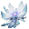
- Блок. Ландыш (ножницами) — 25 % за блок.
- Житель мода. Торговец Потусторонних (если выпадет среди его товаров) — 4–12 алмазов.
- Существо мода. Синий чародей (водится: Мир духов; приходит и Ночью Мира духов) — 18 % за убийство.
Гипофиз радужной саламандры
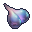
- Добыча. Аксолотль — 15 % за убийство игроком.
- Житель мода. Торговец Потусторонних (если выпадет среди его товаров) — 4–12 алмазов.
- Существо мода. Каменный голем (водится: весь верхний мир) — 11 % за убийство.
Глаза Демонического червя ужаса
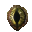
- Крафт. Верстак.
- Житель мода. Торговец Потусторонних (если выпадет среди его товаров) — 4–12 алмазов.
- Существо мода. Злоуст (водится: Мир духов; приходит и Ночью Мира духов) — 14 % за убийство.
Глазное яблоко ворона, зовущего смерть
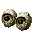
- Добыча. Заклинатель — 20 % за убийство игроком.
- Житель мода. Торговец Потусторонних (если выпадет среди его товаров) — 4–12 алмазов.
- Сундук. Постройки Мира духов — 34 %.
- Существо мода. Мрачный Жнец (водится: Мир духов, Подземный мир; приходит и Ночью Мира духов) — 22 % за убийство.
Глазное яблоко драконоглазого кондора
Глазное яблоко драконоглазого кондора. Нужен в зельях: Тиран 8 — главный, Тиран 6.
- Житель мода. Торговец Потусторонних (если выпадет среди его товаров) — 4–12 алмазов.
- Существо мода. Дервиш (водится: Мир духов; приходит и Ночью Мира духов) — 17 % за убийство.
Гной Блуждающей кожи
 Гной Блуждающей кожи. Нужен в зельях: Тьма 8, Дверь 3.
Гной Блуждающей кожи. Нужен в зельях: Тьма 8, Дверь 3.
- Крафт. Верстак.
- Житель мода. Торговец Потусторонних (если выпадет среди его товаров) — 4–12 алмазов.
- Житель мода. Священник Вечной Ночи (если выпадет среди его товаров) — 4–12 алмазов.
- Существо мода. Гнойная рука (водится: Мир духов) — 5,7 % за убийство.
Грецкий орех
 Грецкий орех. Нужен в зельях: Тьма 8, Дверь 4.
Грецкий орех. Нужен в зельях: Тьма 8, Дверь 4.
- Блок. Листья тёмного дуба — 3 % за блок.
- Сундук. Дом в деревне на равнине — 25 %.
- Житель мода. Торговец Потусторонних (если выпадет среди его товаров) — 4–12 алмазов.
- Житель мода. Священник Вечной Ночи (если выпадет среди его товаров) — 4–12 алмазов.
- Сундук. Постройки Мира духов — 34 %.
Желудочный мешок пожирателя духов
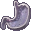
- Добыча. Разоритель — 20 % за убийство игроком.
- Житель мода. Торговец Потусторонних (если выпадет среди его товаров) — 4–12 алмазов.
- Существо мода. Злоуст (водится: Мир духов; приходит и Ночью Мира духов) — 23 % за убийство.
Каштановая спора
Каштановая спора. Нужен в зельях: Зритель 6, Зритель 8.
- Блок. Коричневый гриб, Блок коричневого гриба — 10 % за блок.
- Житель мода. Торговец Потусторонних (если выпадет среди его товаров) — 4–12 алмазов.
- Сундук. Постройки Мира духов — 24 %.
Колокольчик-ловец душ
 Колокольчик-ловец душ. Нужен в зельях: Тьма 8 — главный.
Колокольчик-ловец душ. Нужен в зельях: Тьма 8 — главный.
- Крафт. Верстак.
- Житель мода. Торговец Потусторонних (если выпадет среди его товаров) — 4–12 алмазов.
- Житель мода. Священник Вечной Ночи (если выпадет среди его товаров) — 4–12 алмазов.
- Сундук. Постройки Мира духов — 24 %.
- Существо мода. Безголовая невеста (водится: Мир духов) — 17 % за убийство.
Кристалл юного единорога
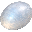
- Крафт. Верстак.
- Житель мода. Торговец Потусторонних (если выпадет среди его товаров) — 4–12 алмазов.
- Сундук. Постройки Мира духов — 29 %.
- Существо мода. Синий чародей (водится: Мир духов; приходит и Ночью Мира духов) — 18 % за убийство.
Кровь демонической рыбы Бездны
 Кровь демонической рыбы Бездны. Нужен в зельях: Демонесса 8 — главный.
Кровь демонической рыбы Бездны. Нужен в зельях: Демонесса 8 — главный.
- Житель мода. Торговец Потусторонних (если выпадет среди его товаров) — 4–12 алмазов.
- Существо мода. Мурлок (водится: океаны) — 21 % за убийство.
Кровь Крысы-пожирательницы снов
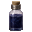
- Пустая бутылка. Летучая мышь — 40 % за попытку, бутылка остывает 5 с.
- Житель мода. Торговец Потусторонних (если выпадет среди его товаров) — 4–12 алмазов.
- Существо мода. Демон знания (водится: Мир духов, океаны; приходит и Ночью Мира духов) — 14 % за убийство.
Кровь огненной саламандры
Кровь огненной саламандры. Нужен в зельях: Красный Жрец 7, Красный Жрец 5, Бездна 8.
- Пустая бутылка. Источник лавы — 50 % за попытку, бутылка остывает 2 с, обжигает: огонь на 4 с и 2 урона.
- Житель мода. Торговец Потусторонних (если выпадет среди его товаров) — 4–12 алмазов.
- Сундук. Постройки Мира духов — 35 %.
- Существо мода. Каменный голем (водится: весь верхний мир) — 4,8 % за убийство.
Кувшинчик с человеческим лицом
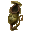
- Крафт. Верстак.
- Житель мода. Торговец Потусторонних (если выпадет среди его товаров) — 4–12 алмазов.
- Сундук. Постройки Мира духов — 24 %.
- Существо мода. Безголовая невеста (водится: Мир духов) — 17 % за убийство.
Лазурит
 Лазурит. Нужен в зельях: Тьма 3, Ошибка 8.
Лазурит. Нужен в зельях: Тьма 3, Ошибка 8.
- Крафт. Верстак.
- Житель мода. Торговец Потусторонних (если выпадет среди его товаров) — 4–12 алмазов.
- Житель мода. Священник Вечной Ночи (если выпадет среди его товаров) — 4–12 алмазов.
- Сундук. Постройки Мира духов — 29 %.
- Существо мода. Полупрозрачный чародей (водится: Мир духов; приходит и Ночью Мира духов) — 4,5 % за убийство.
Лишённое духовности порочное дыхание
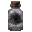
- Пустая бутылка. Огонь душ (в биоме: Долина песка душ) — 50 % за попытку, бутылка остывает 2 с.
- Житель мода. Торговец Потусторонних (если выпадет среди его товаров) — 4–12 алмазов.
- Существо мода. Призрак (водится: Мир духов, Подземный мир; приходит и Ночью Мира духов) — 11 % за убийство.
Озёрная вода, только что отразившая космос
 Озёрная вода, только что отразившая космос. Нужен в зельях: Тьма 8, Дверь 4.
Озёрная вода, только что отразившая космос. Нужен в зельях: Тьма 8, Дверь 4.
- Пустая бутылка. Источник воды (ночью, без дождя, под открытым небом и не в океане) — 80 % за попытку, бутылка остывает 1 с.
- Житель мода. Торговец Потусторонних (если выпадет среди его товаров) — 4–12 алмазов.
- Житель мода. Священник Вечной Ночи (если выпадет среди его товаров) — 4–12 алмазов.
- Сундук. Постройки Мира духов — 32 %.
Перья синего теневого сокола
Перья синего теневого сокола. Нужен в зельях: Тиран 8.
- Житель мода. Торговец Потусторонних (если выпадет среди его товаров) — 4–12 алмазов.
- Существо мода. Дервиш (водится: Мир духов; приходит и Ночью Мира духов) — 28 % за убийство.
Порошок виноградной лозы
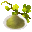
- Блок. Лианы (ножницами) — 40 % за блок.
- Житель мода. Торговец Потусторонних (если выпадет среди его товаров) — 4–12 алмазов.
Порошок ослепительной души
Порошок ослепительной души. Нужен в зельях: Солнце 8 — главный.
- Крафт. Верстак.
- Житель мода. Торговец Потусторонних (если выпадет среди его товаров) — 4–12 алмазов.
- Житель мода. Священник Вечного Палящего Солнца (если выпадет среди его товаров) — 4–12 алмазов.
- Существо мода. Полупрозрачный чародей (водится: Мир духов; приходит и Ночью Мира духов) — 25 % за убийство.
Порошок подсолнечника с чёрной каймой
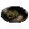
- Блок. Подсолнух (ночью) — 12 % за блок.
- Житель мода. Торговец Потусторонних (если выпадет среди его товаров) — 4–12 алмазов.
Порошок травы золотого плаща
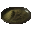
- Блок. Одуванчик, Подсолнух (ножницами) — 30 % за блок.
- Житель мода. Торговец Потусторонних (если выпадет среди его товаров) — 4–12 алмазов.
- Сундук. Постройки Мира духов — 29 %.
Порошок травы-струны
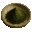
- Блок. Паутина — 50 % за блок.
- Житель мода. Торговец Потусторонних (если выпадет среди его товаров) — 4–12 алмазов.
Правая лапа Серебряного боевого медведя
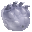
- Добыча. Белый медведь — 25 % за убийство игроком.
- Житель мода. Торговец Потусторонних (если выпадет среди его товаров) — 4–12 алмазов.
- Существо мода. Гнойная рука (водится: Мир духов) — 31 % за убийство.
Рог серого горного козла Хорнакис
Рог серого горного козла Хорнакис. Нужен в зельях: Шут 8 — главный.
- Житель мода. Торговец Потусторонних (если выпадет среди его товаров) — 4–12 алмазов.
- Сундук. Аванпост разбойников — 12 %.
- Сундук. Постройки Мира духов — 31 %.
- Существо мода. Злоуст (водится: Мир духов; приходит и Ночью Мира духов) — 23 % за убийство.
Сок золотого дурмана
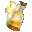
- Пустая бутылка. Одуванчик, Подсолнух — 50 % за попытку, бутылка остывает 1 с.
- Житель мода. Торговец Потусторонних (если выпадет среди его товаров) — 4–12 алмазов.
- Сундук. Постройки Мира духов — 29 %.
Сок июльского винограда
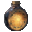
- Крафт. Верстак.
- Житель мода. Торговец Потусторонних (если выпадет среди его товаров) — 4–12 алмазов.
- Житель мода. Священник Вечного Палящего Солнца (если выпадет среди его товаров) — 4–12 алмазов.
Сок туманного древня
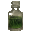
- Пустая бутылка. Любое бревно или листва (в биоме: Болото, Мангровое болото, Тёмный лес; во время дождя) — 50 % за попытку, бутылка остывает 2 с.
- Житель мода. Торговец Потусторонних (если выпадет среди его товаров) — 4–12 алмазов.
Спирт
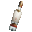
- Крафт. Верстак.
- Житель мода. Торговец Потусторонних (если выпадет среди его товаров) — 4–12 алмазов.
- Сундук. Постройки Мира духов — 34 %.
Тёмный эльфийский лист
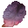
- Блок. Листья тёмного дуба — 6 % за блок.
- Житель мода. Торговец Потусторонних (если выпадет среди его товаров) — 4–12 алмазов.
- Житель мода. Священник Вечного Палящего Солнца (если выпадет среди его товаров) — 4–12 алмазов.
Трут
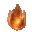
- Блок. Мёртвый куст, Блок сушёной ламинарии — 30 % за блок.
- Житель мода. Торговец Потусторонних (если выпадет среди его товаров) — 4–12 алмазов.
- Сундук. Постройки Мира духов — 34 %.
Чужие слёзы
 Чужие слёзы. Нужен в зельях: Тьма 3, Ошибка 8.
Чужие слёзы. Нужен в зельях: Тьма 3, Ошибка 8.
- Крафт. Верстак.
- Житель мода. Торговец Потусторонних (если выпадет среди его товаров) — 4–12 алмазов.
- Житель мода. Священник Вечной Ночи (если выпадет среди его товаров) — 4–12 алмазов.
Экстракт жимолости
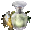
- Сундук. Большие подводные руины — 35 %.
- Сундук. Затонувший корабль (сокровища) — 30 %.
- Житель мода. Торговец Потусторонних (если выпадет среди его товаров) — 4–12 алмазов.
Эфирное масло граба
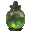
- Пустая бутылка. Дубовое бревно (в биоме: Березняк, Реликтовый березняк) — 50 % за попытку, бутылка остывает 1 с.
- Житель мода. Торговец Потусторонних (если выпадет среди его товаров) — 4–12 алмазов.